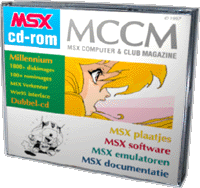

Millennium
 Millennium is de naam van de twee cd-roms die bij de
allerlaatste MCCM werden meegeleverd. Op deze pagina vindt u aanvullende informatie en
eventueel updates voor de software op de cd.
Inhoud
- 1800+ diskimages
- 100+ romimages
- Windows 95 interface
- MSX Verkenner
- Technische documentatie
- Alles over MCCM
- MSX emulators
Verkrijgbaarheid
De cd's zijn alleen voor
MCCM abonnees en werden alleen bij MCCM 90 meegeleverd. Het is
dus niet mogelijk ze los na te bestellen. |